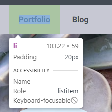

What does it mean to display inline vs inline-block?
The display property in CSS, defines how a browser should display the elements within a rending box on a web page.
There are multiple values for the CSS display property, however for this blog post we will be comparing inline and inline-block values and the differences between them.
Both inline and inline-block, will produce the same behavior. They will render the child elements within the rendering block in the same line together. An example of where this may be used is, if you had a list of links you wanted to display horizontally in a navigation menu. Where the two values differ, is in the way that they handle the padding on the elements.
The inline-block value, will include all padding when rendering the elements in the rendering box. As shown in the example below, 20px is included around the menu links Portfolio and About. Rendering them in the same line together.
li { display: inline-block; padding: 20px; }
The inline value, will only include the left and right padding. It will ignore the top and bottom padding when rendering the elements in the rendering box. As shown in the example below, the menu links Portfolio and About are only including the left and right padding of 20px and are ignoring the top and bottom padding. Rendering them in the same line together.
li { display: inline; padding: 20px; }